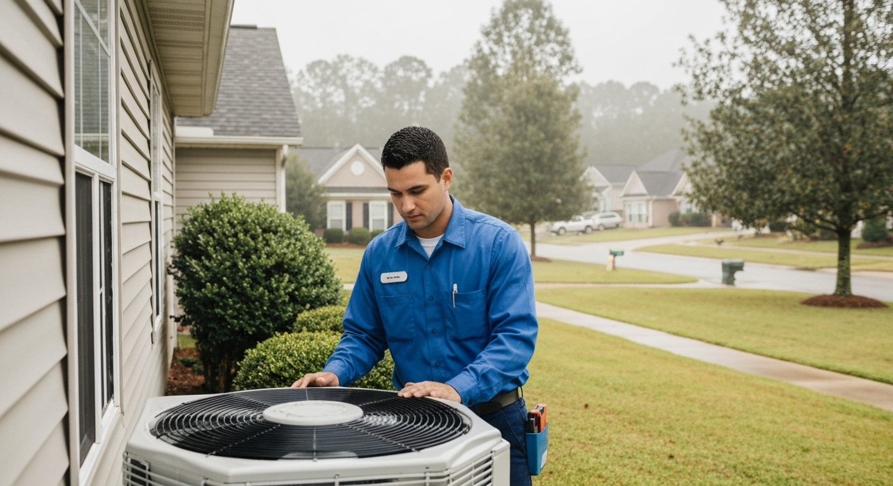

Serving Guntersville, Marshall County, and surrounding areas · Honest diagnostics · No surprise charges
📞 (256) 215-9287
Whether you're a year-round Guntersville resident or at your lake property for the weekend, a failed HVAC system in Alabama's summer isn't something you wait on. Interior temperatures in an unconditioned home can rise quickly once the system stops working. The question is finding someone who shows up fast, diagnoses it honestly, and fixes what's actually broken.
Call (256) 215-9287. Guntersville is about 45–60 minutes from our primary service area — we'll give you an honest ETA when you call, not a number we can't meet.
Call (256) 215-9287 — we answer or call back within 30 minutes. Describe the situation and we'll give you an honest first read and realistic ETA.
Same-day dispatch when available — we'll be upfront about timing for Guntersville calls. We don't overpromise and underdeliver.
Written diagnostic on arrival — full system check with findings in writing before any repair decision.
Repair quote before we touch anything — your written approval before any work starts. The number doesn't change.
Pre-season inspections for lake homes — if your property sits unused through winter, a spring inspection before you open for the season catches problems before they become emergency calls on a hot Saturday.
"Lake house had been sitting closed all winter. Called to have the system checked before we opened for the season. Tech found a clogged drain pan, cleaned the coils, and topped off refrigerant. House cooled down perfectly the first hot weekend." — Phil & Susan W. · Guntersville lake property
"System failed on a Friday night with family visiting. They came out Saturday morning, diagnosed a bad capacitor and dirty condenser coil. Fixed same-day. Charged exactly what they quoted." — Linda K. · Guntersville
"Got honest repair vs. replace advice on an aging system. They told me the compressor was weak but the rest of the system was OK — gave me a realistic timeline on when it would likely fail and what replacement would cost. No pressure." — Gary T. · Marshall County
Service call + diagnostic: $75–$150 (credited toward repair if you proceed)
Capacitor replacement: $150–$300
Contactor or fan motor: $150–$500
Refrigerant recharge: $200–$400
Full AC unit replacement (installed): $3,500–$7,500
Full HVAC system (installed): $7,000–$14,000
Annual tune-up / pre-season inspection: $89–$149
Real North Alabama market ranges. Diagnosis always in writing. Repairs don't start until you approve.
Yes — including seasonal and year-round lake homes. Vacation properties that sit unused for months frequently develop drain pan mold, degraded capacitors, and corrosion from lakeside humidity. We inspect the full system before cooling season for lake home clients.
Approximately 45–60 minutes from our primary service area. We schedule Guntersville appointments with realistic timing — we'll give you an honest ETA when you call, not a window we can't meet.
Call (256) 215-9287 immediately. We dispatch same-day when available. Describe the symptoms on the phone and we'll give you an honest ETA before you commit. For lake homes, keeping the number handy before the season starts is the best preparation.
We service HVAC systems across Guntersville, Huntsville, Madison, Decatur, Athens, and surrounding North Alabama communities. If you're a lake homeowner opening for the season, schedule a pre-season inspection in March or April before the first hot weekend. Don't let a winter of sitting idle turn into a Saturday emergency.
(256) 215-9287 — answered live.
Year-round residents and lake homeowners — we serve Guntersville and surrounding Marshall County.
📞 Call (256) 215-9287